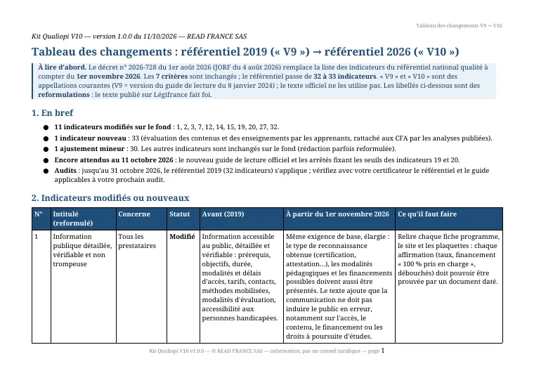
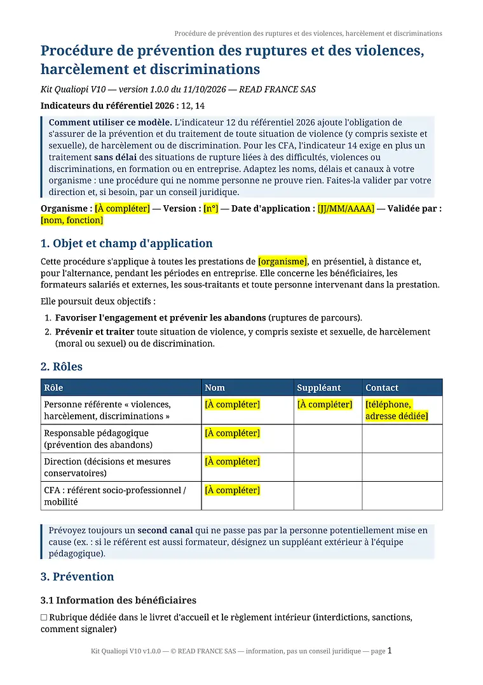
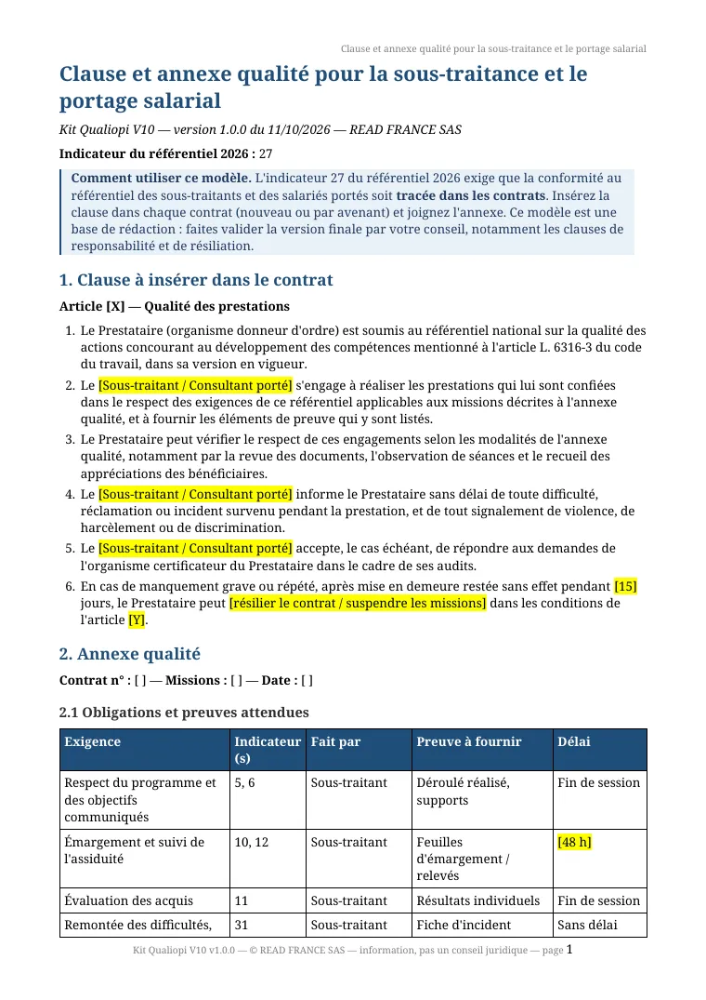
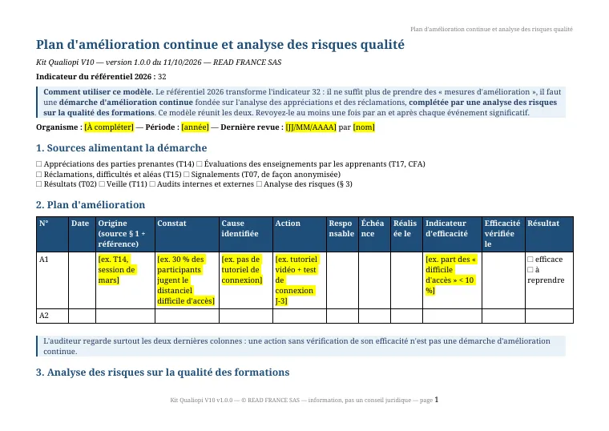

Kit Qualiopi V10 › Modèles gratuits
Modèles Qualiopi gratuits, à jour du référentiel 2026
Trois modèles complets et notre tableau des changements du référentiel 2026, en Word, LibreOffice et PDF, à télécharger ici sans inscription ni adresse e-mail. Les trois modèles couvrent des indicateurs réécrits par le décret du 1er août 2026 : 12 (violences, harcèlement, discriminations), 27 (sous-traitance et portage) et 32 (amélioration continue et analyse des risques).
Ce sont les fichiers de l'échantillon gratuit, version 1.1.0 du 13 octobre 2026. Vous pouvez les utiliser et les adapter librement pour votre organisme ; merci de ne pas les revendre.
Le tableau des changements 2019 → 2026


9 pages au format paysage. Pour chacun des 12 indicateurs qui évoluent : l'avant (2019), l'après (2026), ce qu'il faut faire et à qui l'indicateur s'applique. Suivent la vue d'ensemble des 33 indicateurs, les 7 critères et les points encore en attente au 11 octobre 2026.
PDF .pdf · 194 KoWord .docx · 20 KoLibreOffice .odt · 55 Ko
Ce tableau est notre lecture, avec des libellés reformulés. Il ne remplace pas le texte officiel : le décret n° 2026-728 sur Légifrance, ou sa version PDF sur le site du ministère du Travail, fait foi. La même analyse se lit en ligne : ce qui change au 1er novembre.
T07 · Procédure violences, harcèlement, discriminations et ruptures (indicateur 12)


Le décret ajoute à l'indicateur 12 une phrase nouvelle : le prestataire « s'assure de la prévention et du traitement de toute situation de violence, dont les violences sexistes et sexuelles, de harcèlement ou de discrimination ». Il faut donc une procédure écrite, connue des bénéficiaires.
Le modèle en 9 parties : objet, rôles, prévention (information, sensibilisation des intervenants, prévention des abandons), signalement, traitement, recours externes, confidentialité, registre confidentiel des signalements, revue. Le tableau des recours donne les numéros nationaux (17, 112, 114, 3919, 119, 3928) ; vérifiez-les à chaque mise à jour.
Word .docx · 16 KoLibreOffice .odt · 54 KoPDF .pdf · 119 Ko
À adapter avant tout : le nom du référent, un second canal de signalement qui ne passe pas par une personne mise en cause, vos délais de traitement.
T13 · Clause et annexe qualité pour la sous-traitance (indicateur 27)


En 2019, le donneur d'ordre devait s'assurer que son sous-traitant respectait le référentiel. Depuis le décret de 2026, il doit aussi « en assure[r] la traçabilité dans les contrats de sous-traitance ». Le modèle contient :
- une clause en 6 points à insérer dans chaque contrat (ou par avenant) ;
- une annexe qui liste, exigence par exigence, l'indicateur concerné, qui fait quoi, la preuve à fournir et le délai ;
- les modalités de contrôle et un tableau interne de vos sous-traitants et salariés portés.
Word .docx · 15 KoLibreOffice .odt · 52 KoPDF .pdf · 90 Ko
Faites relire la version finale par votre conseil, en particulier les clauses de responsabilité et de résiliation.
T16 · Plan d'amélioration continue et analyse des risques (indicateur 32)


Le décret fait passer l'indicateur 32 des « mesures d'amélioration » à « une démarche d'amélioration continue », complétée par « une analyse des risques sur la qualité des formations ». Le modèle réunit les deux, au format paysage :
un plan d'amélioration dont les deux dernières colonnes (efficacité vérifiée, résultat) sont celles que l'auditeur regarde ; une cartographie de 10 risques déjà rédigés, du risque d'information publiée inexacte au risque d'évolution réglementaire non prise en compte, avec une cotation probabilité × gravité ; une revue des risques et un bilan annuel.
Tout l'échantillon en un fichier, avec un lisez-moi : archive ZIP de l'échantillon (hébergée sur GitHub).
Les ressources officielles, gratuites elles aussi
Avant tout modèle, ces textes font référence. Tous sont publics.
- Décret n° 2026-728 du 1er août 2026 sur Légifrance, avec le tableau officiel des 33 indicateurs. C'est le « référentiel Qualiopi 2026 en PDF » que beaucoup cherchent : le ministère du Travail en publie une version PDF.
- Guide de lecture V9 du 8 janvier 2024 (PDF) : niveau attendu et exemples de preuves pour chaque indicateur du référentiel de 2019. Le guide du référentiel 2026 n'est pas publié (vérifié le 13 octobre 2026).
- Questions-réponses du ministère sur la certification qualité, version 2 (PDF).
- Arrêté du 6 juin 2019 sur les modalités d'audit : durées, audits de surveillance et de renouvellement, traitement des non-conformités.
- Liste publique des organismes de formation sur data.gouv.fr, pour vérifier les catégories d'actions inscrites sur votre certificat.
Ce que le kit payant ajoute
| Contenu | Gratuit | Kit complet |
|---|---|---|
| Tableau des changements 2019 → 2026 (D01) | inclus | inclus |
| Modèles T07, T13, T16 (indicateurs 12, 27, 32) | inclus | inclus |
| 16 autres procédures et outils qualité, dont T17 pour l'indicateur 33 | – | inclus |
| 20 documents administratifs et variantes : convention, feuille d'émargement par demi-journée (présentiel et distanciel), certificat de réalisation, bilans de compétences, VAE, CFA | – | inclus |
| 6 tableurs avec formules, Excel et LibreOffice (X01 à X06) | – | inclus |
| Check-list des preuves des 33 indicateurs (D02) | – | inclus |
| Check-list de préparation de l'audit (D03) | – | inclus |
| Plan d'action en 21 jours (D04) | – | inclus |
| Index des documents par indicateur (D05) | – | inclus |
| Mise à jour après la publication du guide de lecture 2026 (si elle paraît dans les 12 mois) | – | inclus |
Les 36 autres modèles et les 6 tableurs. Procédures et outils qualité : T01 fiche programme de formation ; T02 tableau des indicateurs de résultats et note de calcul ; T03 questionnaire d'analyse du besoin ; T04 positionnement et évaluation des acquis à l'entrée ; T05 convocation et livret d'accueil ; T06 suivi individuel et évaluation des acquis ; T08 livret de l'apprenti et liaison centre / entreprise (CFA) ; T09 ressources pédagogiques, suivi du distanciel et référent pédagogique ; T10 rôles, compétences et développement des intervenants ; T11 registre de veille (légale, métiers, pédagogique) ; T12 procédure d'accueil des personnes en situation de handicap ; T14 questionnaires d'appréciation des parties prenantes ; T15 procédure et registre des réclamations, difficultés et aléas ; T17 évaluation des contenus et des enseignements par les apprenants ; T18 dossier certification : correspondance, habilitation, inscription ; T19 gouvernance, partenaires et insertion (CFA). Documents administratifs et variantes : T20 convention de formation professionnelle ; T21 contrat de formation (personne qui paie elle-même) ; T22 règlement intérieur des stagiaires et apprentis ; T23 convocation à la formation ; T24 feuille d'émargement par demi-journée (présentiel et distanciel) ; T25 attestation de fin de formation et d'assiduité ; T26 certificat de réalisation ; T27 programme détaillé et déroulé pédagogique ; T28 livret d'accueil du stagiaire et de l'apprenti ; T29 test de positionnement : trame, barème et décision ; T30 questionnaire d'appréciation à chaud (participant) ; T31 questionnaire d'évaluation à froid (participant) ; T32 questionnaire d'appréciation du financeur ; T33 questionnaire d'appréciation de l'entreprise et du tuteur ; T34 référent handicap : lettre de mission et recueil des besoins ; T35 formations CPF : check-list et suivi du dossier ; T36 contrat de sous-traitance d'actions de formation ; T37 bilan de compétences : convention, confidentialité, synthèse ; T38 accompagnement VAE : engagement, plan et suivi des délais ; T39 convention de formation par apprentissage et calendrier d'alternance (CFA). Tableurs : X01 registre des réclamations, difficultés et aléas ; X02 plan d'amélioration continue et analyse des risques ; X03 registre de veille (légale, métiers, pédagogique) ; X04 matrice des compétences et suivi des intervenants ; X05 suivi des sous-traitants et salariés portés ; X06 tableau de suivi des 33 indicateurs, avec taux par critère. Le contenu complet du kit.
Adapter un modèle : ce que l'auditeur vérifiera
Un modèle recopié n'est pas une preuve. L'auditeur regarde la mise en œuvre : le registre des signalements tenu à jour, le contrat de sous-traitance signé avec son annexe, le plan d'amélioration dont la colonne « efficacité vérifiée » est remplie. Quatre réglages suffisent pour partir du bon pied :
- Remplacez chaque zone surlignée « [À compléter] » par vos informations, et supprimez les rubriques qui ne vous concernent pas.
- Datez le document et donnez-lui un numéro de version : c'est ce qui montre qu'il est à jour.
- Diffusez-le à ceux qui doivent l'appliquer (bénéficiaires, intervenants, sous-traitants) et gardez la trace de cette diffusion.
- Prévoyez la date de la prochaine revue, et tenez-la.
Pour savoir quels indicateurs travailler en premier, faites l'auto-diagnostic des 33 indicateurs (gratuit, sans inscription).
À lire aussi
Sources officielles
- Décret n° 2026-728 du 1er août 2026 relatif au référentiel national sur la qualité des actions concourant au développement des compétences (JORF n° 0180 du 4 août 2026)
- Le même décret en PDF, sur le site du ministère du Travail
- Guide de lecture du référentiel national qualité, V9 du 8 janvier 2024 (PDF)
- Ministère du Travail, questions-réponses sur la certification qualité, version 2 (PDF)
- Arrêté du 6 juin 2019 relatif aux modalités d'audit associées au référentiel national (version en vigueur, dernière modification par l'arrêté du 1er juillet 2025)
Textes consultés le 13 octobre 2026.
Fichiers vérifiés le 13 octobre 2026 : métadonnées limitées à « READ FRANCE SAS », aucune donnée personnelle.
Page rédigée par READ FRANCE SAS avec l'aide d'Octave, notre assistant IA, à partir des textes officiels cités ci-dessus, relus sur Légifrance et sur le site du ministère du Travail le 13 octobre 2026. Les reformulations n'engagent que nous : le texte publié au Journal officiel fait foi. Information, pas un conseil juridique. Directeur de la publication : Tanguy Warsmann. Une erreur, ou un texte paru depuis ? Écrivez à octave@vread.fr.